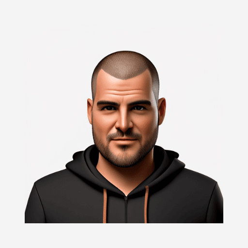

01 ADAPTIVE
Claudio
Warm charcoal, soft cream, and a hint of clay. A quiet, considered space for long reads.

thechelsuk / NNW THEMES GitHubMADE FOR NETNEWSWIRE
Ten carefully made themes for the articles you love. Take a look around, find your reading mood, and make it yours.
Explore the collectionTHE COLLECTION
10 THEMES
01 ADAPTIVE
Warm charcoal, soft cream, and a hint of clay. A quiet, considered space for long reads.
02 LIGHT
A bright, easygoing palette inspired by a fresh morning on the web.
03 LIGHT
Clean lines, generous breathing room, and a little colour where it counts.
04 DARK
A dark, easy-reading theme with custom type and a calm, understated palette.
05 DARK
A dark page with unmistakable red type. For readers who like a little edge.
06 ADAPTIVE
A familiar look drawn from thechels.uk, adapting to your device's light or dark setting.
07 ADAPTIVE
Claudio's warm editorial feel with a crisp blue accent, adapting to light and dark mode.
08 ADAPTIVE
Primary colours, honest geometry and a strong grid. A Bauhaus poster you can read.
09 ADAPTIVE
Washi paper, sumi ink and a vermilion seal. Japanese minimalism with room to breathe.
10 ADAPTIVE
A sky that follows the hour each post was published, from dawn light to a crescent moon.
NEW TO THEMES?
Choose a theme and select Add theme to open it in NetNewsWire. You can change your theme any time in the app's settings.
Discover NetNewsWire